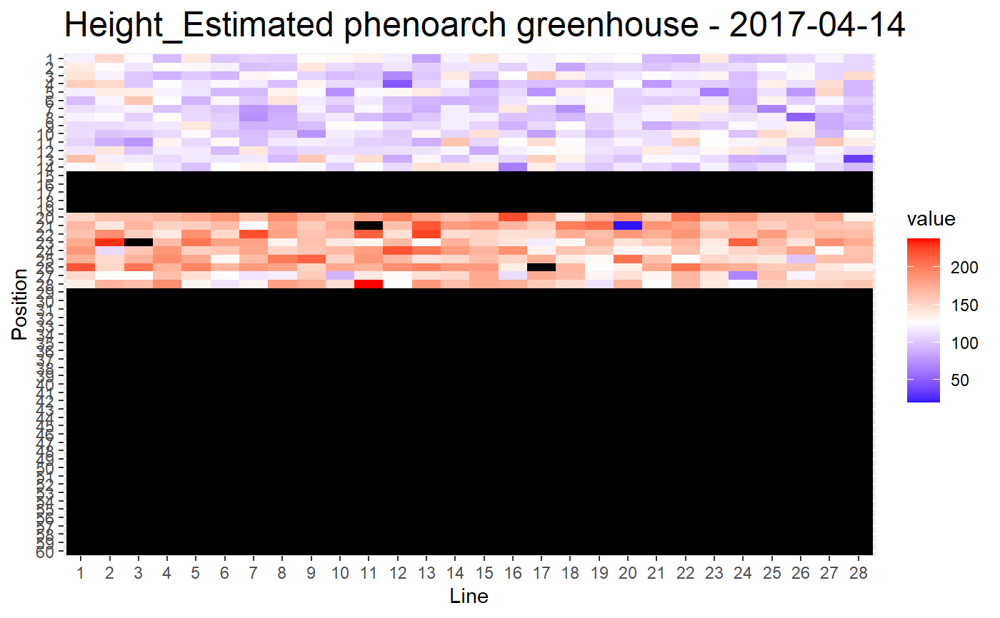

imageGreenhouse.Rda function for representing a trait in the phenoarch greenhouse
imageGreenhouse( datain, trait, xcol, ycol, numrow, numcol, daycol = NULL, typeD, typeT = 1, ylim = NULL, typeI = "ggplot2", typeV = NULL )
| datain | a dataframe to explore |
|---|---|
| trait | character, a parameter to draw |
| xcol | character, name of the abscissa column ("Line" or "x"...) |
| ycol | character, name of the ordinate column ("Position" or "y"...) |
| numrow | numeric, number of rows in the greenhouse |
| numcol | numeric, number of columns in the greenhouse |
| daycol | character, name of the day time column ("Day" or "Time"...) necessary for video call. |
| typeD | numeric, type of dataframe (1==wide, 2==long). If typeD==2, the input dataset must contain a 'Trait' column. |
| typeT | numeric, type of the trait (1: quantitatif, 2: qualitatif), 1 is the default |
| ylim | if trait is quantitative, numeric vectors of length 2, giving the trait coordinates ranges. default = NULL |
| typeI | character, type of image. "video" for createDynam.R program that produces a video of an experiment, "plotly" for interactive graphic for spatial visualisation, "ggplot2" for classical graphic in report pdf , default. |
| typeV | character, type de video, NULL by default, "absolute" for abs. video |
a ggplot2 object if plotly, the print of the ggplot2 object (a graph) otherwise
the data.frame in input must have the positions of each pot (Line and Position columns).
For plotly type graphic, the data frame in input must also contain id of plants (Manip, Pot, Genotype, Repsce)
# \donttest{ library(dplyr) # a video call library(dplyr) selec<-"2017-04-14" # in PAdata, daycol=="Time" imageGreenhouse(datain=filter(PAdata,Time==selec),trait="Height_Estimated", xcol="Row",ycol="Col",numrow=28,numcol=60,daycol="Time", typeD=1,typeT=1,ylim=NULL,typeI="video")# an interactive plotly call test<-imageGreenhouse(datain=plant4, trait="Biomass24",xcol="Line",ycol="Position", numrow=28,numcol=60, typeD=1,typeT=1, ylim=NULL,typeI="plotly") # test is a ggplot2 object, you have to render it with: plotly::ggplotly(test) # a classical ggplot2 call imageGreenhouse(datain=plant4, trait="Biomass24",xcol="Line",ycol="Position", numrow=28,numcol=60,typeD=1,typeT=1, ylim=NULL,typeI="ggplot2")# }